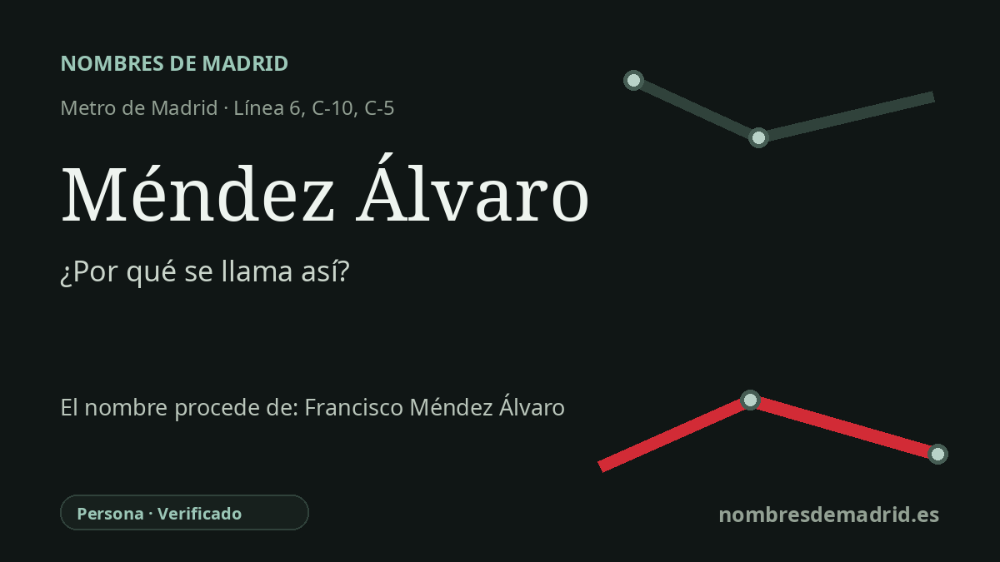

Publicado el · Investigación de Nombres de Madrid · Cómo verificamos cada origen · 9 fuentes consultadas
Respuesta rápida
Méndez Álvaro debe su nombre a la calle junto al intercambiador, la calle de Méndez Álvaro, que recuerda a Francisco Méndez Álvaro (1806-1883), destacado médico, higienista, periodista médico y antiguo alcalde de Madrid. El nombre de la estación conserva así en el plano del transporte a una figura clave de la salud pública del siglo XIX.
La historia del nombre
Méndez Álvaro no es, en origen, un nombre de paisaje ni de barrio. La estación toma su nombre de la calle de Méndez Álvaro, el gran eje viario junto al intercambiador; las fuentes oficiales de transporte sitúan allí o junto a ella la estación y sus accesos. La calle, a su vez, recuerda a Francisco Méndez Álvaro, una de las figuras más reconocidas de la salud pública española del siglo XIX.
Francisco Méndez Álvaro nació en Pajares de Adaja, en Ávila, en 1806 y murió en Madrid en 1883. Formado en el complejo sistema médico-quirúrgico de su época, obtuvo títulos de cirugía y medicina y destacó no solo como facultativo, sino también como escritor, traductor y organizador del conocimiento médico. Su trayectoria unió medicina, periodismo y política en un momento en que las epidemias, la mortalidad urbana y la higiene pública eran problemas centrales para Madrid y para España.
Las mejores fuentes biográficas lo presentan como pionero del higienismo español y del periodismo médico. Durante la epidemia de cólera de 1834, su actuación en Brihuega le valió la Cruz de Epidemias; más tarde trabajó en la administración sanitaria, escribió sobre higiene pública, mortalidad, lepra y vacunación, y participó en conferencias sanitarias internacionales. Estuvo ligado a El Siglo Médico y a otras publicaciones médicas, impulsó instituciones profesionales y presidió el Instituto Nacional de Vacunación dependiente de la Real Academia.
Su dimensión pública ayuda a explicar que Madrid lo recordara en el callejero. Méndez Álvaro estuvo vinculado al Partido Moderado, fue diputado, ocupó cargos en instrucción pública y sanidad, y suele figurar como alcalde de Madrid durante aproximadamente un mes en 1843. Ese dato aparece en fuentes biográficas médicas, aunque una biografía moderna advierte que el nombramiento no resulta fácil de comprobar en determinadas crónicas municipales.
El nombre llegó al transporte mucho después, con el crecimiento urbano del entorno de Atocha y Arganzuela. La línea 6 de Metro abrió el tramo Pacífico-Oporto, con la estación de Méndez Álvaro, el 7 de mayo de 1981; Cercanías y la Estación Sur de Autobuses convirtieron más tarde el lugar en un gran intercambiador. La etimología está bien respaldada, pero debe formularse como una dedicatoria indirecta: la estación se llama así por la calle, y la calle conmemora a Francisco Méndez Álvaro.